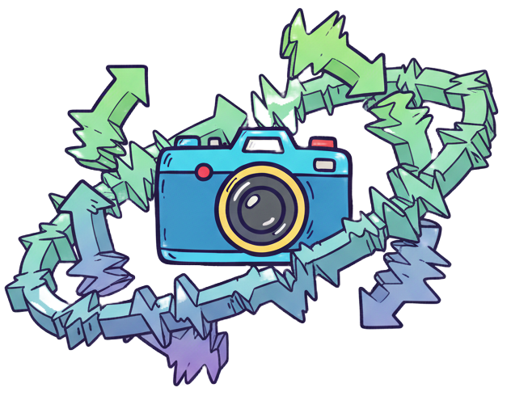
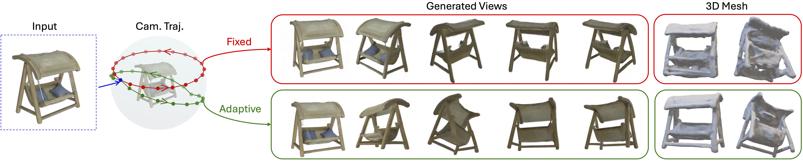
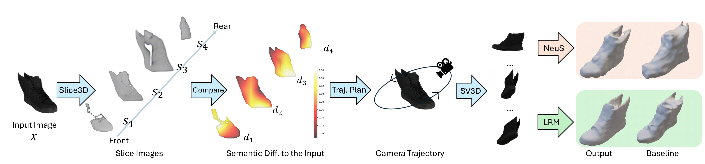
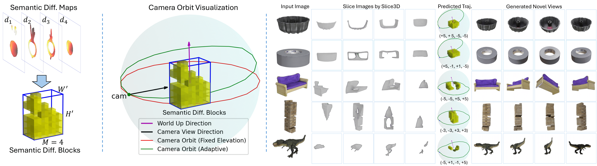
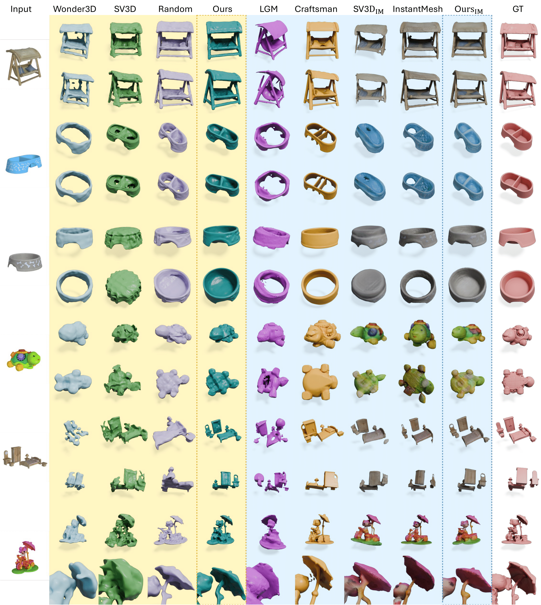

Simon Fraser University

We introduce the simple idea of adaptive view planning to multi-view synthesis, aiming to improve both occlusion revelation and 3D consistency for single-view 3D reconstruction. Instead of producing an unordered set of views independently or simultaneously, we generate a sequence of views, leveraging temporal consistency to enhance 3D coherence. Importantly, our view sequence is not determined by a pre-determined and fixed camera setup. Instead, we compute an adaptive camera trajectory (ACT), to maximize the visibility of occluded regions of the 3D object to be reconstructed. Once the best orbit is found, we feed it to a video diffusion model to generate novel views around the orbit, which can then be passed to any multi-view 3D reconstruction model to obtain the final result. Our multi-view synthesis pipeline is quite efficient since it involves no run-time training/optimization, only forward inferences by applying pre-trained models for occlusion analysis and multi-view synthesis. Our method predicts camera trajectories that reveal occlusions effectively and produce consistent novel views, significantly improving 3D reconstruction over SOTA alternatives on the unseen GSO dataset.

Pipeline overview of our single-view reconstruction method, ACT-R, with adaptive camera trajectories (ACT). We first employ Slice3D to produce the slice images of the input object, with the slicing direction from the camera to the object center. Then we compute the semantic difference between the input and its slices by comparing their $512 \times 7 \times 7$ feature maps extracted from VGG16. Each difference map $d_i \in [0,1]^{7 \times 7}$ is up-scaled and overlaid onto slice images for better visualization. Next, we identify the regions that have significant semantic differences, and plan the camera trajectories based on them. Finally, we condition SV3D on our planned trajectories, yielding a sequence of views, which can be fed into NeUS or InstantMesh (IM) for 3D reconstruction.

Illustration of camera trajectory planning. Left: Transforming the semantic difference maps into 3D blocks, where lighter yellow indicates greater differences. Middle: Visualization of different camera orbits. Red: fixed elevation; Green: variable elevations that capture greater visibility. ``diff'' and ``cam'' denote difference and camera, respectively. Right: Predicted adaptive trajectories showcase.
Comparison of static vs. adaptive camera trajectories on various objects.

@article{wang2025actr,
title={ACT-R: Adaptive Camera Trajectories for Single-View 3D Reconstruction},
author={Wang, Yizhi and Zhao, Mingrui and Zhang, Hao},
journal={3DV},
year={2026}}